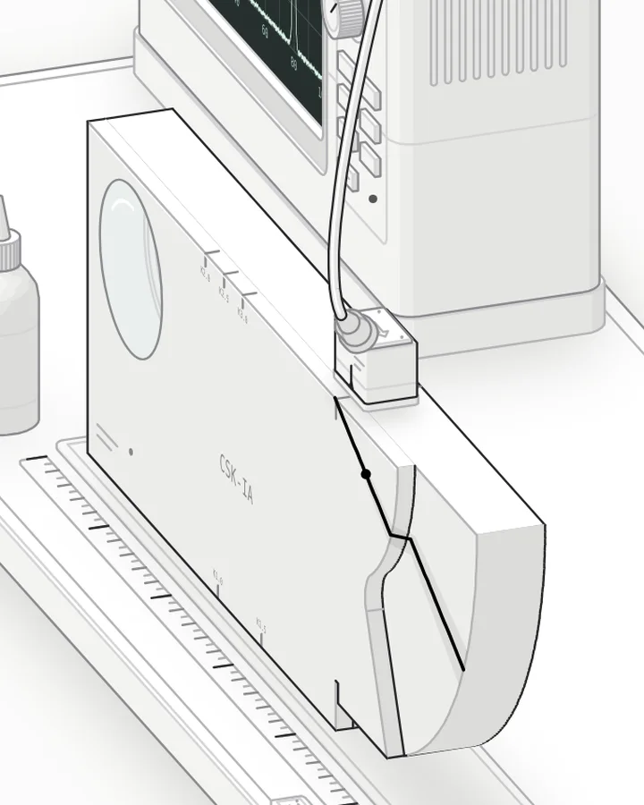

Fig 1.5.1build.mjs・節錄整理
兩層台階，兩段圓弧
試塊右端其實是兩層：後面 20 mm 那層伸到 R100，前面 5 mm 那層只到 R50，經 R10 圓角接一條徑向直邊。兩層各寫成一條 x–z 輪廓，沿厚度方向擠出成稜柱，前面那層後畫，台階就自然出現；斜探頭的聲束同時照到兩層，所以螢幕上會有 R50、R100 兩個回波。
// 後面 20 mm 層：底邊＋R100 圓弧
const PROF_A = [...FOOT_LINE, ...arcPts(200, 100, 100, TH0, 0, 60), [0, 100]];
// 前面 5 mm 層：徑向直邊 → R10 圓角 → R50 圓弧
const PROF_B = [...FOOT_LINE, R100_END, T_LINE,
...arcPts(FC[0], FC[1], 10, aLine, aArc, 10),
...arcPts(200, 100, 50, PHI, 0, 34), [0, 100]];
block += prismY(PROF_A, 10, 30); // 先畫後層
block += prismY(PROF_B, 30, 35); // 再畫前層，台階就出來了